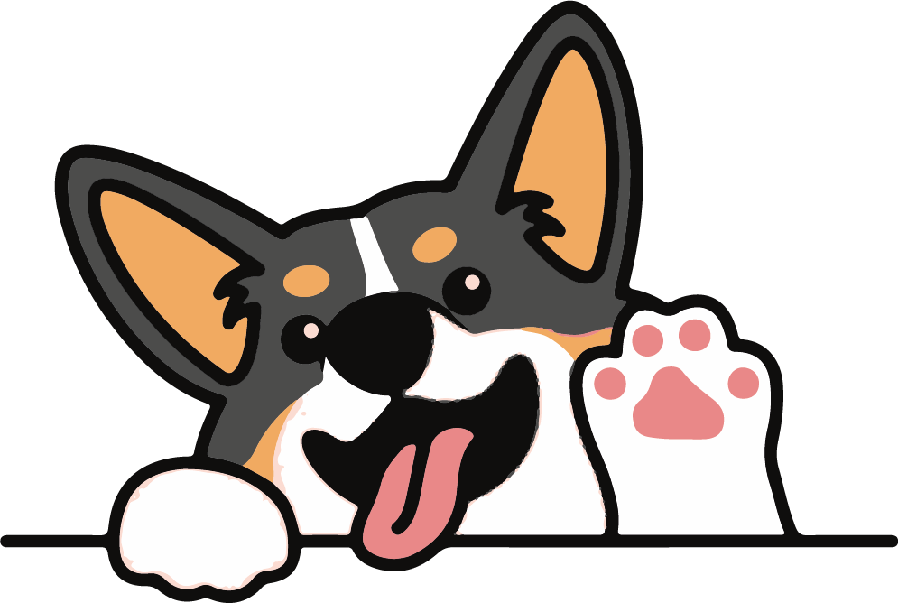

Cachorros los Chillos
Amigos Incondicionales
Desde 1979
Scan Me

Razas de Perros
PEKINÉS
Es una raza de perro pequeño y de apariencia majestuosa, conocida por su abundante pelaje y su carácter tranquilo. Tamaño: Tienen una altura promedio de 15 a 23 centímetros y un peso que oscila entre 3 y 7 kilogramos. Ver Más

Comprar
POMERANIA
También conocido como Pomeranian o Pom, es una raza de perro pequeño y encantador. Tamaño: Por lo general, pesan entre 1,8 y 3,5 kilogramos, aunque algunos pueden llegar a pesar hasta 7 kilogramos. A pesar de su pequeño tamaño, tienen una apariencia robusta y compacta. Ver Más

Comprar
BICHÓN MALTES
Tiende a llevarse bien con otros perros y mascotas, así como con personas de todas las edades. Son perros amigables y agradables, y disfrutan de la interacción con otros. Sin embargo, como con cualquier raza. Tamaño: El Bichón Maltés es un perro pequeño, generalmente pesando entre 3 y 4 kilogramos y con una altura de 20 a 25 centímetros. Ver Más

Comprar
American Cocker Spaniel
Los American Cocker Spaniels son perros de tamaño mediano. Los machos generalmente pesan entre 11 y 13,5 kilogramos, mientras que las hembras suelen pesar entre 9 y 12 kilogramos. Ver Más

Comprar
Sheltie
También conocido como Shetland Sheepdog o "Collie en miniatura", es una raza de perro de tamaño mediano que se asemeja al Collie de la frontera, pero en una versión más pequeña. Los Shelties son perros de tamaño mediano, con una altura promedio de entre 33 y 41 centímetros y un peso que oscila entre 6 y 11 kilogramos. Ver Más

Comprar
Bulldog Francés
También conocido como "Frenchie", es una raza de perro de tamaño pequeño a mediano, con una apariencia distintiva y encantadora. Los Bulldogs Franceses son perros compactos y musculosos. Tienen una altura promedio de entre 28 y 33 centímetros y su peso oscila entre 8 y 14 kilogramos. Ver Más

Comprar
Chihuahua
es una raza de perro pequeña y distintiva que se caracteriza por su tamaño diminuto y su personalidad animada. Los Chihuahuas son una de las razas más pequeñas de perros. Por lo general, pesan entre 1 y 3 kilogramos y tienen una altura de 15 a 23 centímetros. Ver Más

Comprar
Scottish Terrier
Es una raza de perro pequeña y distintiva que se caracteriza por su tamaño diminuto y su personalidad animada. Los Chihuahuas son una de las razas más pequeñas de perros. Por lo general, pesan entre 1 y 3 kilogramos y tienen una altura de 15 a 23 centímetros. Ver Más

Comprar
Shih Tzu
Es una raza de perro pequeña y de apariencia distinguida, conocida por su pelaje largo y su carácter amigable. El Shih Tzu es un perro pequeño y compacto. Por lo general, tienen una altura de 20 a 28 centímetros en la cruz y un peso que oscila entre 4 y 7 kilogramos. Ver Más

Comprar
Jack Russell Terrier
Es una raza de perro enérgica y atlética, conocida por su valentía y espíritu vivaz. Aquí tienes una descripción de las características típicas del Jack Russell Terrier: Tamaño y apariencia: El Jack Russell Terrier es un perro de tamaño pequeño a mediano. Tienen una altura promedio de 25 a 38 centímetros en la cruz y un peso que oscila entre 5 y 8 kilogramos. Ver Más

Comprar
Terrier de Norfolk
Es una raza de perro pequeño y robusto que se originó en el Reino Unido. El Terrier Inglés es un perro de tamaño pequeño a mediano. Tienen una altura promedio de alrededor de 23 a 26 centímetros en la cruz y un peso que oscila entre 5 y 7 kilogramos. Ver Más

Comprar
Beagle
Es una raza de perro pequeño y robusto que se originó en el Reino Unido. El Terrier Inglés es un perro de tamaño pequeño a mediano. Tienen una altura promedio de alrededor de 23 a 26 centímetros en la cruz y un peso que oscila entre 5 y 7 kilogramos. Ver Más

Comprar
Boston Terrier
Es una raza de perro pequeña y compacta, conocida por su apariencia distintiva y su personalidad amigable.El Boston Terrier es un perro de tamaño pequeño a mediano. Tienen una altura promedio de 38 a 43 centímetros en la cruz y un peso que oscila entre 4.5 y 11 kilogramos. Ver Más

Comprar
Pug
También conocido como Carlino, es una raza de perro pequeña y compacta con una apariencia distintiva y un carácter encantador. El Pug es un perro de tamaño pequeño a mediano. Tienen una altura promedio de 25 a 30 centímetros en la cruz y un peso que oscila entre 6 y 8 kilogramos. Ver Más

Comprar
Quiénes Somos

Conocer
Somos un criadero de mascotas con una experiencia de más de 30 años en el mercado, siendo los pioneros en la crianza de perros de raza, con un alto estándar de calidad en lo que se refiere al manejo de pedigrí y linaje, conservando siempre su nobleza y características que distinguen a cada una de las razas que nosotros poseemos tanto en perros como en gatos, contando con un staff muy amplio a lo que se refiera a razas como son: yorshire, terrier, maltes, shih-tzu, pekinés, pomerano, schnauzer, chihuahua, Boston terrier, pug, bulldog ingles, beagle, jack rusell terrier, bullmastiff, mastín napolitano, bull terrier, bulldog francés, lihasa apso y en gatos tenemos razas persas e himalayas Todos con una excelente calidad y cualidades que les caracterizan al linaje de sus razas.
arrow_back_ios